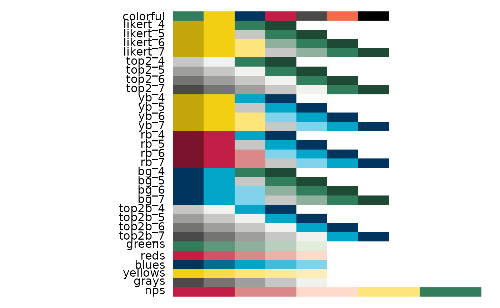
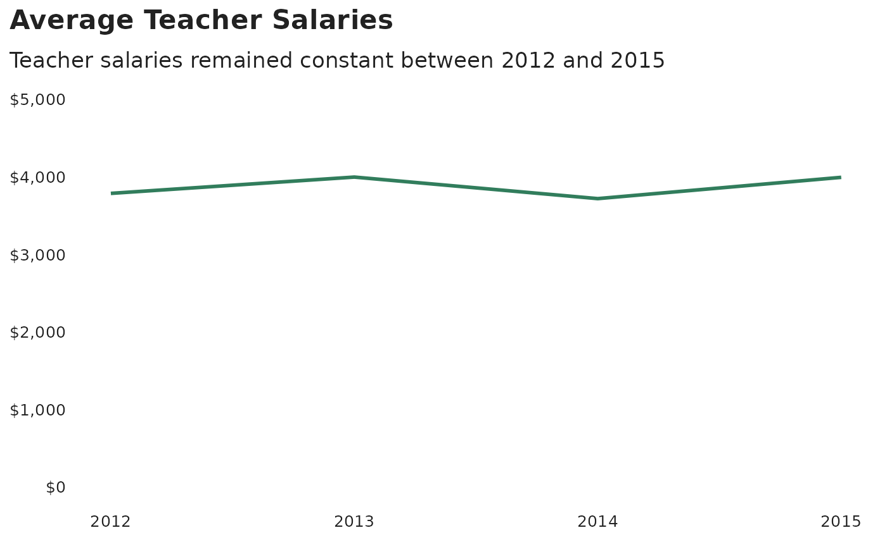
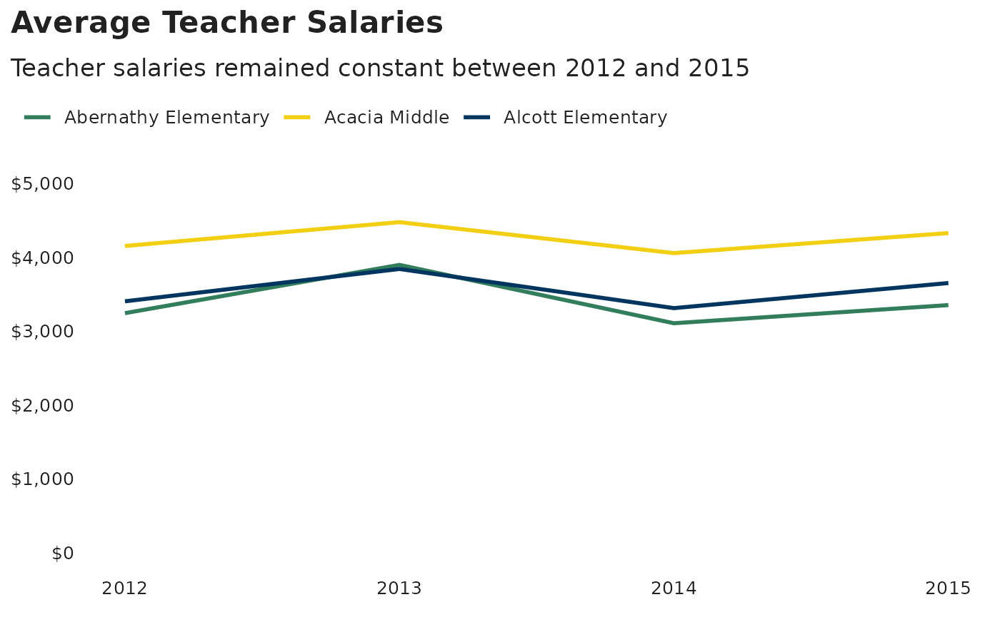
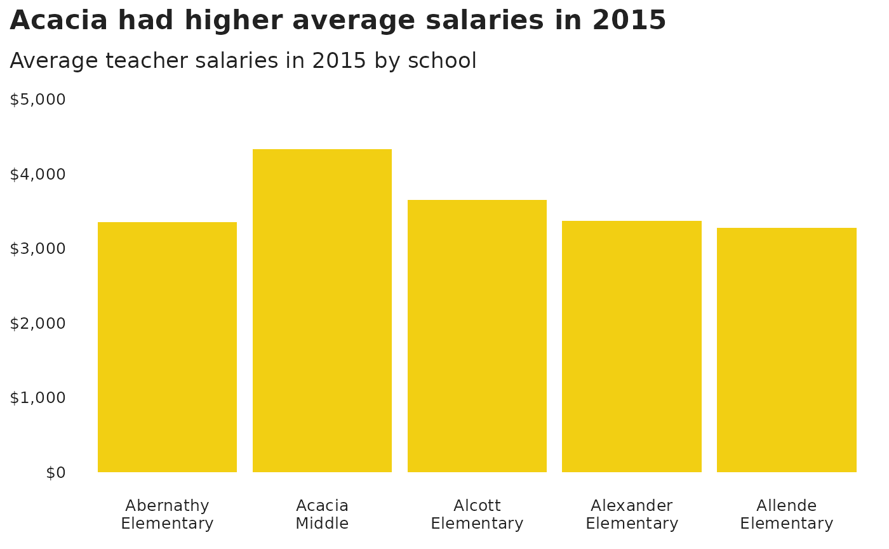
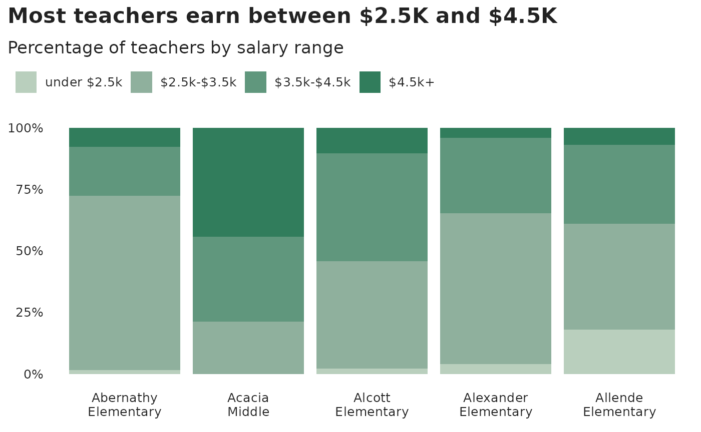
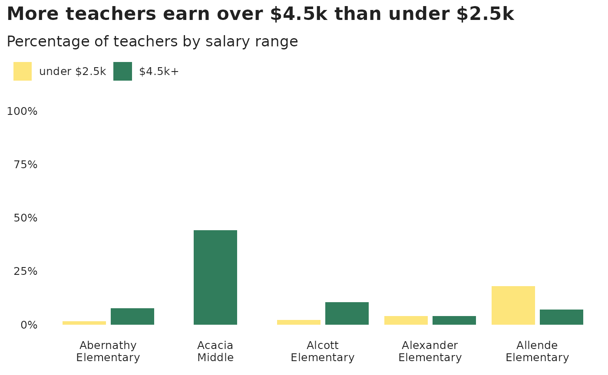
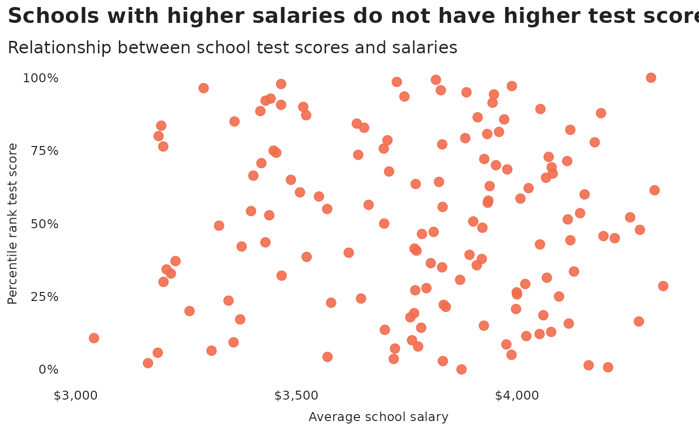
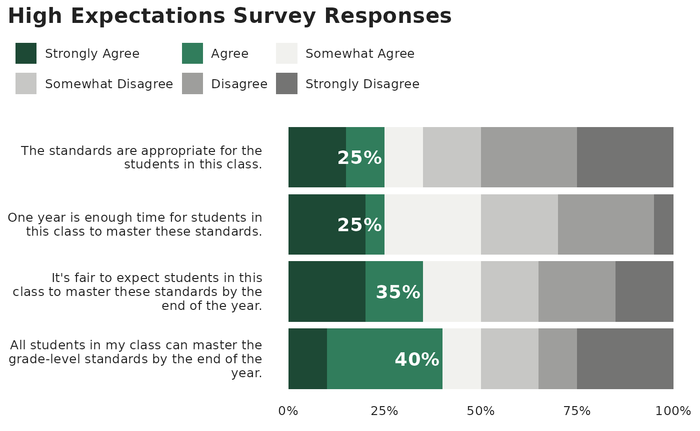

How to create TNTP style graphics
At the TNTP data team, we have developed an R package and an R cookbook to make the process of creating publication-ready graphics in our in-house style using R’s ggplot2 library a more reproducible process, as well as making it easier for people new to R to create graphics.
We’ll get to how you can put together the various elements of these graphics, but let’s get the admin out of the way first…
Load all the libraries you need
A few of the steps in this cookbook - and to create charts in R in general - require certain packages to be installed and loaded. We will use the following packages.
# NOTE: We are not simply loading `tidyverse` in this vignette due to how vignettes
# are built to create the documentation website. In other contexts, however, we
# would simply use `library(tidyverse)` instead of loading many of the packages individually.
library(tntpr)
library(ggplot2)
library(dplyr)
library(tidyr)
library(purrr)
library(stringr)
library(forcats)
library(ggalt)
library(ggridges)Creating plots with tntp_style()
The tntpr package contains the function
tntp_style(). It add TNTP’s custom ggplot2
theme to your plots and controls items like fonts, font size, titles and
axis labels, tick marks, gridlines, and the legend. The function ensures
we maintain consistency across the org in the look of our plots. Plus,
the style was created with our design team to ensure the look is
aesthetically pleasing.
The function contains parameters where users can adjust items such as font, font size, text colors, title and legend position, and whether to show the legend title, axis title, and grid lines. All parameters have default values so users do not need to set any of them.
Consult the function’s documentation at ?tntp_style for
more information on the parameters.
Note that colors for lines in the case of a line chart or bars for a
bar chart, do not come out of the box from the tntp_style()
function, but need to be explicitly set in your other standard
ggplot chart functions.
Example with tntp_style()
Here is a quick example on using the tntp_style()
theme.
# base plot we will reuse in this section
plt <- ggplot(ggplot2::mpg, aes(displ, hwy)) +
geom_point() +
labs(
title = "Cars with higher displacement\nhave a lower MPG",
subtitle = "Displacement vs. MPG",
caption = "Data from ggplot's mpg dataset",
x = "Engine Displ.",
y = "MPG"
)
plt +
tntp_style()Setting font family and font sizes
We will highlight two parameters to tntp_style() that
can help customize your plot.
family
The family parameter lets you set the text font family.
This changes the font family for all items, including plot and axis
titles, legend titles and text, and axis text. The parameter defaults to
‘Halyard Display’, TNTP’s font style, but uses ‘sans’ if ‘Halyard
Display’ is not available. You will receive a warning if your specified
font is not found. You can also specify a separate header font using the
header_family parameter.
You will need to manually import additional fonts, including the
Halyard fonts, using the extrafont package before they are
available to R. Follow these steps to import fonts:
- Download the Halyard Display Fonts in .ttf forms from the Data Analytics Sharepoint Document Library under the “Fonts” category.
- Open the fonts folder on your laptop (Settings -> Personalization -> Fonts) and drag and drop the Halyard Fonts there to install them on your computer.
- In RStudio, install the
extrafontpackage withinstall.packages("extrafont"). - Import fonts into the extrafont database with
extrafont::font_import(). This only needs to be done once. The process is long, and can be significantly shortened by only importing the Halyard fonts usingextrafont::font_import(pattern = "Halyard"). - Register the extra fonts with R using
extrafont::loadfonts(). This needs to be done once each R session, but will be done automatically when loading thetntprlibrary.
You can check to see which fonts are available to R with
windowsFonts() on Windows or quartzFonts() on
Mac.
base_size
The tntp_style() function allows a parameter called
base_size which controls font sizes. The default value is
28 and the recommended minimum is 15. The number represents the plot
title’s font size. Other font sizes, such as subtitles, axis labels and
text, and legend labels and text will also be adjusted based on the
base_size value.
Below are the font sizes when base_size is set to the
default of 28:
- Plot title: 28
- Plot subtitle: 22.4
- Caption: 11.2
- Axis title: 16.8
- Axis text: 16.8
Further customizing plots outside tntp_style()
tntp_style() adds TNTP’s ggplot2 theme to
your plot. Users needing more customization can stack themes by adding
an additional theme() layer after adding
tntp_style(). For example, the following plot sets the font
to ‘sans’ and the font size to 20 in tntp_style(). It then
manually changes to subtitle font to ‘serif’ and the subtitle size to 25
in an additional theme(). Please don’t use this
combination in a real plot!
plt +
tntp_style(show_axis_titles = TRUE, family = "sans", base_size = 20) +
theme(plot.subtitle = ggplot2::element_text(family = "serif", size = 25))You can also add theme elements that do not coincide with a parameter
of tntp_style(). For example, here we add a border around
the plot with a theme element.
plt +
tntp_style(show_axis_titles = TRUE) +
theme(panel.border = element_rect(color = "black", fill = NA))To see all available settings you can adjust with a theme element,
see the documentation for ?theme.
Using TNTP brand colors
The tntpr package includes functions to allow you to
easily use TNTP brand colors in your visualizations.
Colors
The primary function you’ll use is tntp_colors(), which
takes in human-friendly color names as arguments and returns a character
vector of the equivalent hex codes:
tntp_colors("green", "mint")
#> [1] "#317D5C" "#E2EDDC"A companion function is show_tntp_colors(), which will
make a quick display of the given colors in the plot window.
show_tntp_colors("green", "moss", "mint")
You can also use show_tntp_colors() with no color
arguments to display all available colors and names:
# Note: the cex_label parameter is used to adjust the relative font size
show_tntp_colors(cex_label = 0.7)
Palettes
Some color palettes are used frequently in visualizations. The
tntp_palette() function allows you to access these
pre-determined palettes more easily:
tntp_palette("likert_6")
#> [1] "#C2A60A" "#F2CF13" "#FDE57B" "#8FB09D" "#317D5C" "#1D4935"Palettes can be reversed by setting reverse = TRUE, and
can be quickly displayed using the show_tntp_palette()
function:
show_tntp_palette("likert_6", reverse = TRUE)For a list and visualization of all pre-set palettes, run the function with no arguments:

The example plots below will show how to incorporate these functions into your ggplot2 visualizations.
Example Plots
We will now show examples of plots that we frequently use at TNTP
using a fake data set from the tntpr package. Let’s first
load and clean the data set.
# load fake data into global environment
# remove all salaries of 0
county_data <- tntpr::fake_county |>
filter(t_salary > 0)
avg_salary <- county_data |>
filter(t_salary != 0) |>
group_by(school_year) |>
summarize(avg_salary = mean(t_salary, na.rm = TRUE), .groups = "drop")We will lower the font size for all plots to 16.
base_font_size <- 16Make a line chart
#Make plot
ggplot(avg_salary, aes(x = school_year, y = avg_salary)) +
geom_line(colour = tntp_colors("green"), linewidth = 1) +
scale_y_continuous(labels = scales::dollar, limits = c(0, 5000)) +
labs(
title="Average Teacher Salaries",
subtitle = "Teacher salaries remained constant between 2012 and 2015"
) +
tntp_style(base_size = base_font_size)
Make a multiple line chart
Note that in the multiple line chart, we overwrote
ggplot2’s default color scheme to incorporate TNTP colors.
We pulled the hex codes for the colors we wanted to use with
tntp_palette() and added them to the chart with
scale_colour_manual().
#Prepare data
school_salary <- county_data |>
filter(t_salary != 0) |>
group_by(school_year, school_name) |>
summarize(avg_salary = mean(t_salary, na.rm = TRUE), .groups = "drop")
# create list of school names so we can easily filter data set for the number of schools we want
school_names <- unique(school_salary$school_name)
# only plot two schools
line_plot_schools <- school_salary |>
filter(school_name %in% school_names[1:3])
ggplot(line_plot_schools, aes(x = school_year, y = avg_salary, color = school_name)) +
geom_line(linewidth = 1) +
scale_y_continuous(labels = scales::dollar, limits = c(0, 5000)) +
scale_colour_manual(values = tntp_palette("colorful")) +
labs(
title="Average Teacher Salaries",
subtitle = "Teacher salaries remained constant between 2012 and 2015"
) +
tntp_style(base_size = base_font_size)
Make a bar chart
#Prepare data
bar_df <- school_salary |>
filter(
school_year == 2015,
school_name %in% school_names[1:5]
) |>
# add line breaks for better plotting
mutate(school_name = str_wrap(school_name, 7))
ggplot(bar_df, aes(x = school_name, y = avg_salary)) +
geom_bar(stat="identity",
position="identity",
fill= tntp_colors("gold")) +
scale_y_continuous(labels = scales::dollar, limits = c(0, 5000)) +
labs(
title="Acacia had higher average salaries in 2015",
subtitle = "Average teacher salaries in 2015 by school"
) +
tntp_style(base_size = base_font_size)
Make a stacked bar chart
The stacked bar chart uses percentages on the y-axis. Note the
formatting of the y-axis to create the percentages:
scale_y_continuous(labels = scales::percent, limits = c(0,1)).
We set limits = c(0,1) to ensure the y-axis limits run from
0% to 100%. When working with percentages, the axis should (almost)
always run from 0% to 100%. Additionally, in geom_bar() we
set stat = "identity". This tells ggplot2 to
plot the data as-is and to not aggregate the data when making the plot.
It is often easier to aggregate data outside of ggplot2,
more transparent, and easier to check. We could have also replaced
geom_bar(stat = "identity", position = "stack") with
geom_col() (no parameters needed) to arrive at the same
plot.
#prepare data
stacked_df <- county_data |>
filter(
school_year == 2015,
school_name %in% school_names[1:5]
) |>
mutate(t_salary_cut = cut(t_salary,
breaks = c(0, 2500, 3500, 4500, 10000),
labels = c("under $2.5k", "$2.5k-$3.5k", "$3.5k-$4.5k", "$4.5k+"))) |>
group_by(school_name, t_salary_cut) |>
summarise(n_cut_school = n(), .groups = "drop_last") |>
mutate(
n_cut_salary = sum(n_cut_school, na.rm = TRUE),
perc_in_each_cut = n_cut_school / n_cut_salary
) |>
# add line breaks for better plotting
mutate(school_name = str_wrap(school_name, 7))
#set order of stacks by changing factor levels
stacked_df$t_salary_cut = factor(stacked_df$t_salary_cut, levels = rev(levels(stacked_df$t_salary_cut)))
ggplot(
data = stacked_df,
aes(x = school_name, y = perc_in_each_cut, fill = t_salary_cut)
) +
geom_bar(stat = "identity", position = "stack") +
scale_y_continuous(labels = scales::percent, limits = c(0,1)) +
scale_fill_manual(values = tntp_palette("greens")) +
labs(title = "Most teachers earn between $2.5K and $4.5K",
subtitle = "Percentage of teachers by salary range") +
theme(legend.position = "top",
legend.justification = "left") +
guides(fill = guide_legend(reverse = TRUE)) +
tntp_style(base_size = base_font_size)
This example shows proportions, but you might want to make a stacked bar chart showing number values instead - this is easy to change!
The value passed to the position argument will determine
if your stacked chart shows proportions or actual values.
position = "fill" will draw your stacks as proportions,
and position = "identity" will draw number values.
Make a grouped bar chart
Making a grouped bar chart is very similar to making a bar chart. You
just need to change position = "identity" to
position_dodge2(preserve = "single").
Note the use of the named vector colors_to_use to
expressly map colors to values. This is a safe way to ensure we are
properly mapping colors to values.
# only plot the lowest and highest earning groups
earnings_to_keep <- levels(stacked_df$t_salary_cut)[c(4,1)]
# map bar colors to values
colors_to_use <- tntp_colors("yellow", "green") |>
set_names(earnings_to_keep)
dodged_df <- stacked_df |>
# only plot the lowest and highest earning groups
filter(t_salary_cut %in% !!earnings_to_keep) |>
# switch order of factors so that the lowest earnings plot first
mutate(t_salary_cut = factor(t_salary_cut, levels = earnings_to_keep))
ggplot(dodged_df, aes(x = school_name, y = perc_in_each_cut, fill = t_salary_cut)) +
geom_bar(stat = "identity", position = position_dodge2(preserve = "single")) +
scale_y_continuous(labels = scales::percent, limits = c(0,1)) +
scale_fill_manual(values = colors_to_use) +
labs(title = "More teachers earn over $4.5k than under $2.5k",
subtitle = "Percentage of teachers by salary range") +
tntp_style(base_size = base_font_size)
Make a scatterplot
# create data set showing school test scores and average school salaries
scores_salary <- county_data |>
group_by(school_name) |>
summarize(
avg_test_score = mean(sch_ela_avg + sch_math_avg, na.rm=FALSE),
avg_salary = mean(t_salary, na.rm = FALSE),
enrollment = mean(sch_enroll_2015, na.rm = TRUE),
.groups = "drop"
) |>
mutate(perc_rank_test_score = percent_rank(avg_test_score)) |>
drop_na()
ggplot(scores_salary, aes(avg_salary, perc_rank_test_score)) +
geom_point(color = tntp_colors("tangerine"), alpha = 0.9, size = 3) +
labs(
title = "Schools with higher salaries do not have higher test scores",
subtitle = "Relationship between school test scores and salaries",
x = "Average school salary",
y = "Percentile rank test score"
) +
scale_x_continuous(labels = scales::dollar) +
scale_y_continuous(labels = scales::percent) +
tntp_style(base_size = base_font_size, show_axis_titles = TRUE)
Make a dumbbell chart
Another way of showing difference is a dumbbell chart. Note that
geom_dumbell() comes from the ggalt
package.
dumbbell_df <- dodged_df |>
pivot_wider(id_cols = "school_name", names_from = "t_salary_cut", values_from = "n_cut_school") |>
mutate(across(where(is.numeric), ~replace_na(.x, 0)))
ggplot(dumbbell_df, aes(x = `under $2.5k`, xend = `$4.5k+`, y = fct_reorder(school_name, `under $2.5k`)), group = school_names) +
geom_dumbbell(
color = tntp_colors("light_grey"),
size = 3,
colour_x = tntp_colors("gold"),
colour_xend = tntp_colors("green"),
show.legend = TRUE
) +
labs(title = "More teachers earn over $4.5k than under $2.5k",
subtitle = "Number of teachers by salary range",
x = "Number of teachers earnign a given salary") +
tntp_style(base_size = base_font_size)
Make a histogram
# number of teachers per school
number_teachers_school <- county_data |>
count(school_year, school_name)
ggplot(number_teachers_school, aes(n)) +
geom_histogram(binwidth = 5, colour = "white", fill = tntp_colors('navy')) +
labs(
title = "Schools have a wide distribution in the number of teachers",
subtitle = "Total number of teachers per school",
x = "Number of teacher in school",
y = "Count"
) +
tntp_style(base_size = base_font_size)Making density plots
The ggridges package
contains additional plots for plotting distributions using ridgeline
plots.
ggplot(county_data, aes(x = t_salary, y = school_year, group = school_year, fill = factor(school_year))) +
geom_density_ridges(quantile_lines = TRUE, quantiles = 4) +
scale_x_continuous(labels = scales::dollar) +
labs(title = "Income distrubutions for teachers has remained constant",
subtitle = "Income distrubution and quantiles for teachers") +
tntp_style(base_size = base_font_size) +
theme(legend.position = "none") +
scale_fill_manual(values = tntp_palette("colorful"))Working with survey data
We often work with survey data at TNTP. Here we will highlight a
couple examples of plotting survey data. We will use the
teacher_survey data set in the tntpr package,
which is a fake teacher survey. Let’s start by loading the data set and
calculating averages.
teacher_survey <- tntpr::teacher_survey
# the y-axis will contain text of an entire survey question
# we want to place line breaks in this text so plots look better
axis_line_breaks <- 40
# scales in HE questions, in order starting with the strongest
agree_disagree_scale <- rev(c("Strongly Agree", "Agree", "Somewhat Agree", "Somewhat Disagree", "Disagree", "Strongly Disagree"))
# put survey into long form and clean up question names
teacher_survey_he <- teacher_survey |>
select(-timing) |>
pivot_longer(cols = everything(), names_to = "question", values_to = "response")
# calculate percentage of responses to each high expectations question
teacher_survey_he_perc <- teacher_survey_he |>
drop_na("response") |>
# calculate the number of responses for each response option
count(question, response, name = "n_response") |>
# calculate the number of responses for each question
group_by(question) |>
mutate(n_question = sum(n_response)) |>
ungroup() |>
# calculate percentages
mutate(
# calculate percentages
percent = n_response / n_question,
# make a column that is text of the percent for plotting
percent_pretty = scales::percent(percent, accuracy = 1)
)
# calculate percentage of strongly agree and agree
teacher_survey_he_perc <- teacher_survey_he_perc |>
mutate(scale_strength = ifelse(response %in% !!agree_disagree_scale[c(5,6)], "Strong response", "Weak response")) |>
group_by(question, scale_strength) |>
mutate(strong_response_percent = sum(percent)) |>
ungroup() |>
mutate(
strong_response_percent = ifelse(response == "Agree", strong_response_percent, NA),
# create line breaks for questions ,which will make plots look better
question = str_wrap(question, axis_line_breaks),
response = factor(response, levels = agree_disagree_scale)
)Plot likert items - highlights top two
The first plot calls out the two highest response values, “Strongly
Agree” and “Agree”. Note that the tntp_style() function
does not alter the font size or family of the text within
geom_text() so we set it manually.
ggplot(teacher_survey_he_perc, aes(percent, question, fill = response)) +
geom_col() +
geom_text(
aes(label = scales::percent(strong_response_percent, accuracy = 1), x = strong_response_percent),
color = "white", fontface = "bold", family = "Halyard Display", size = 5, hjust = 1.05
) +
scale_x_continuous(labels = scales::percent, limits = c(0,1)) +
scale_fill_manual(values = tntp_palette("top2_6"), drop = FALSE) +
guides(fill=guide_legend(nrow=2, byrow=TRUE, reverse = TRUE)) +
labs(title = "High Expectations Survey Responses") +
tntp_style(base_size = base_font_size)
Plot likert items - diverging
Diverging charts have been made much simpler with the introduction of
the position_diverge() function in tntpr. In interactive
use, if you have both ggplot2 and tntpr loaded
this can be called like other positions using a string:
geom_col(position = "diverge")However for non-interactive code such as examples and books (like this one), it needs be called using the full function:
ggplot(teacher_survey_he_perc, aes(x = percent, y = question, fill = fct_rev(response))) +
geom_col(position = position_diverge()) +
scale_fill_manual(
values = tntp_palette("likert_6"),
drop = FALSE,
breaks = agree_disagree_scale,
labels = agree_disagree_scale
) +
geom_vline(aes(xintercept = 0), linetype = 1, linewidth = 1.2, alpha = .7) +
scale_x_continuous(limits = c(-1, 1), breaks = seq(-1, 1, .25), labels = \(x) scales::percent(abs(x))) +
labs(title = "High Expectations Survey Responses") +
tntp_style(base_size = base_font_size)Calling as a function also allows for additional customization
through the parameters break_after, fill,
vjust, and reverse
ggplot(teacher_survey_he_perc, aes(x = percent, y = question, fill = fct_rev(response))) +
geom_col(position = position_diverge(break_after = "Agree")) +
geom_text(aes(label = ifelse(percent > 0.1, percent_pretty, "")),
position = position_diverge(break_after = "Agree", vjust = 0.5),
family = "Halyard Display", size = 3) +
scale_fill_manual(
values = tntp_palette("likert_6"),
drop = FALSE,
breaks = agree_disagree_scale,
labels = agree_disagree_scale
) +
geom_vline(aes(xintercept = 0), linetype = 1, linewidth = 1.2, alpha = .7) +
scale_x_continuous(limits = c(-1, 1), breaks = seq(-1, 1, .25), labels = \(x) scales::percent(abs(x))) +
labs(title = "High Expectations Survey Responses") +
tntp_style(base_size = base_font_size)